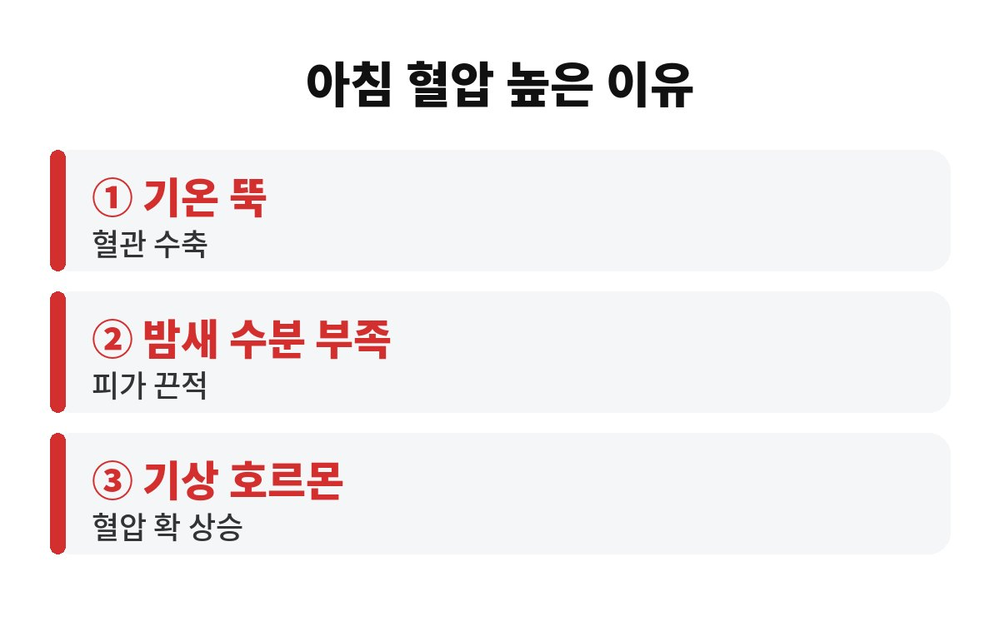
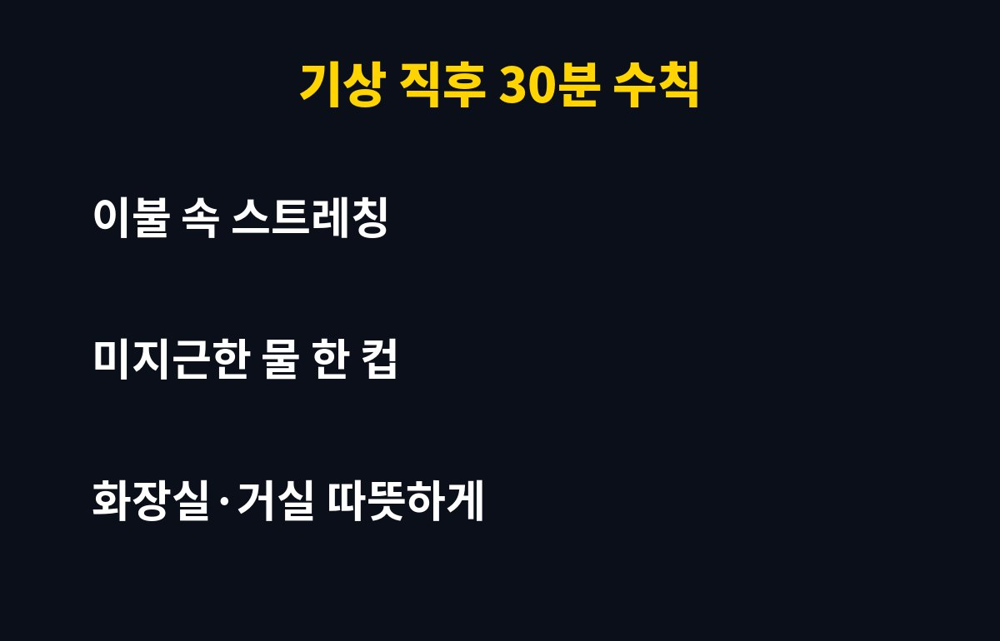

아침 혈압 높은 이유는 크게 세 가지, 추위로 혈관이 오그라들고, 밤새 몸에 수분이 모자라고, 일어나는 순간 몸이 혈압을 끌어올리기 때문입니다. 날씨가 쌀쌀해진 요즘 부모님이 아침마다 어지럽다거나 머리가 무겁다고 하신다면, 그 이유가 어디에 있는지 오늘 짚어 드릴게요.
우리 몸은 자는 동안 혈압이 내려갔다가, 깰 무렵부터 서서히 올라가도록 설계되어 있어요. 잠에서 깰 때 몸을 깨우는 호르몬이 나오면서 심장이 더 힘차게 뛰고 혈관도 팽팽해지거든요. 건강한 사람에게는 자연스러운 변화지만, 이미 혈압이 높은 분들에게는 이 '아침 상승'이 부담이 될 수 있습니다.
그래서 의료진들이 아침 시간대를 특히 조심하라고 말하는 겁니다. 아침 혈압 높은 이유가 단순히 컨디션 문제가 아니라, 몸의 리듬 자체와 연결돼 있다는 뜻이에요.
기온이 뚝 떨어지면 몸은 열을 뺏기지 않으려고 피부 쪽 혈관을 수축시킵니다. 혈관이 좁아지면 같은 양의 피를 보내기 위해 더 센 압력이 필요하겠죠. 호스 끝을 손으로 살짝 쥐면 물이 세게 나오는 것과 같은 원리예요.
특히 따뜻한 이불 속에서 나와 차가운 거실이나 화장실로 이동하는 순간이 위험합니다. 온도 차이가 크면 혈압이 출렁이기 쉬워서, 어르신들은 어지럼이나 두근거림을 느끼기도 해요. 아침 혈압 높은 이유 중에서도 겨울철에는 이 온도 차이가 가장 큰 변수라고 보시면 됩니다.
자는 동안에도 우리는 숨을 쉬고 땀을 내면서 수분을 조금씩 잃어요. 아침에는 몸이 살짝 목마른 상태라 피가 평소보다 끈적해지기 쉽습니다. 피가 끈적하면 혈관을 지나가기가 힘들어지니 심장은 더 애를 써야 하고요.
그렇다고 일어나자마자 찬물을 벌컥 마시는 건 권하지 않아요. 미지근한 물을 한 컵 천천히 마시는 정도가 몸에 무리가 없습니다.
또 하나 놓치기 쉬운 게 수면 습관이에요. 밤늦게까지 잠을 못 자거나 코를 심하게 골며 자는 분들은 아침 혈압이 더 높게 나오는 경우가 있다고 알려져 있습니다. 잠이 얕으면 몸이 계속 긴장 상태라 혈관이 충분히 쉬지 못하거든요. 그러니 아침 혈압 높은 이유를 찾을 때는 전날 밤의 잠도 같이 돌아보시는 게 좋습니다.
짠 음식과 늦은 밤 야식도 영향을 줄 수 있어요. 국물 있는 음식을 늦게 먹고 자면 몸에 나트륨이 남아 아침에 붓기와 함께 혈압이 신경 쓰일 수 있습니다. 저녁은 가볍게, 국물은 조금만 드시는 쪽이 부모님 건강에 훨씬 낫습니다. 작은 습관이지만 쌀쌀한 계절일수록 차이가 체감되는 부분이에요.
마지막으로, 다음과 같은 증상이 있으면 미루지 말고 병원을 찾으세요. 갑자기 심한 두통이 오거나, 말이 어눌해지거나, 가슴이 답답하고 한쪽 팔다리에 힘이 빠지는 느낌이 들 때입니다. 이런 신호는 "좀 쉬면 낫겠지" 하고 넘기면 안 돼요. 평소 아침 혈압 수치를 기록해 두면 이런 순간에 의료진이 훨씬 빨리 판단할 수 있습니다.
거창한 방법은 필요 없어요. 아래 표처럼 순서만 바꿔도 몸의 부담을 꽤 덜 수 있습니다.
| 이렇게 하세요 | 이유 |
| 이불 속에서 손발 꼼지락 스트레칭 | 갑작스러운 자세 변화 줄이기 |
| 천천히 앉았다가 일어나기 | 어지럼·혈압 출렁임 예방 |
| 미지근한 물 한 컵 | 밤새 부족한 수분 보충 |
| 거실·화장실 미리 따뜻하게 | 온도 차이로 인한 혈관 수축 완화 |
여기에 하나 더, 이미 혈압약을 드시고 있다면 임의로 약 시간을 바꾸거나 끊지 마세요. 아침 혈압 높은 이유를 아무리 알아도, 약 복용은 반드시 담당 의사와 상의해서 조절해야 합니다. 가정용 혈압계가 있다면 일어나서 화장실을 다녀온 뒤, 앉아서 잠깐 쉬고 재는 습관을 들이면 의사에게 훨씬 좋은 자료가 돼요.
부모님께 "요즘 아침에 어지럽지 않으세요?" 한마디 건네보는 것도 큰 도움이 됩니다. 어르신들은 불편해도 참고 넘기시는 경우가 많으니까요. 혹시 우리 집은 아침 풍경이 어떤가요? 댓글로 나눠 주세요.
도움이 되셨다면 구독과 공감 부탁드려요. 다음 글에서도 생활 속 건강 정보로 찾아올게요.


※ 이 글은 일반적인 건강 정보이며 진단·치료를 대신하지 않습니다. 증상이 있거나 혈압약을 복용 중이라면 반드시 전문의와 상담하세요.